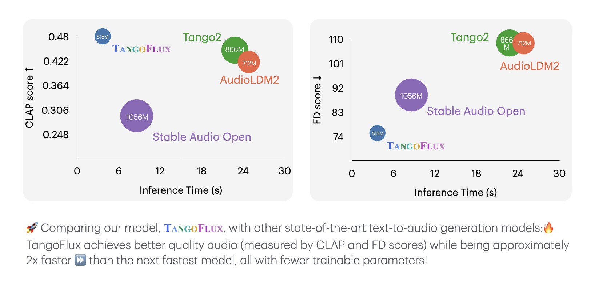

TANGOFLUX : Super Fast and Faithful Text to Audio Generation with Flow Matching and Clap-Ranked Preference Optimization
1DeCLaRe Lab, Singapore University of Technology and
Design, Singapore
2NVIDIA
Abstract
We introduce TANGOFLUX , an efficient Text-to-Audio (TTA) generative model with 515M parameters, capable of generating up to 30 seconds of 44.1kHz audio in just 3.7 seconds on a single A40 GPU. A key challenge in aligning TTA models lies in the difficulty of creating preference pairs, as TTA lacks structured mechanisms like verifiable rewards or gold-standard answers available for Large Language Models (LLMs). To address this, we propose CLAP-Ranked Preference Optimization (CRPO), a novel framework that iteratively generates and optimizes preference data to enhance TTA alignment. We demonstrate that the audio preference dataset generated using CRPO outperforms existing alternatives. With this framework, TANGOFLUX achieves state-of-the-art performance across both objective and subjective benchmarks. We open source all code and models to support further research in TTA generation.
Salient Features

Comparative Samples
| Text Description | Stable Audio Open | TANGO 2 | AudioLDM2 | AudioBox | TANGOFLUX (Ours) |
|---|---|---|---|---|---|
| Melodic human whistling harmonizing with natural birdsong | |||||
| A basketball bounces rhythmically on a court, shoes squeak against the floor, and a referee’s whistle cuts through the air. | |||||
| Dripping water echoes sharply, a distant growl reverberates through the cavern, and soft scraping metal suggests something lurking unseen. | |||||
| A train conductor blows a sharp whistle, metal wheels screech on the rails, and passengers murmur while settling into their seats | |||||
| A pile of coins spills onto a wooden table with a metallic clatter, followed by the hushed murmur of a tavern crowd and the creak of a swinging door. | |||||
| The deep growl of an alligator ripples through the swamp as reeds sway with a soft rustle and a turtle splashes into the murky water. |
Resources
1. We share our code on GitHub, which aims to open source the audio generation model training and evaluation for easier comparison.
2. We have released our model checkpoints on HuggingFace for reproducibility.